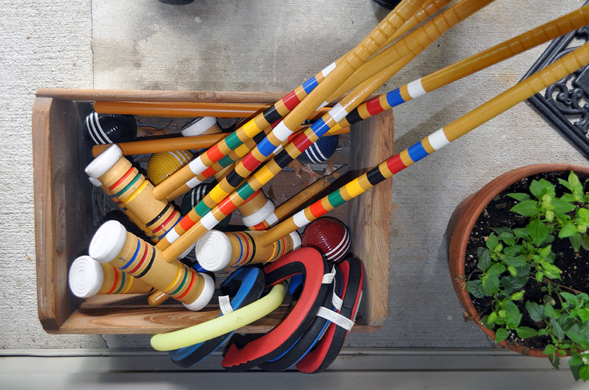
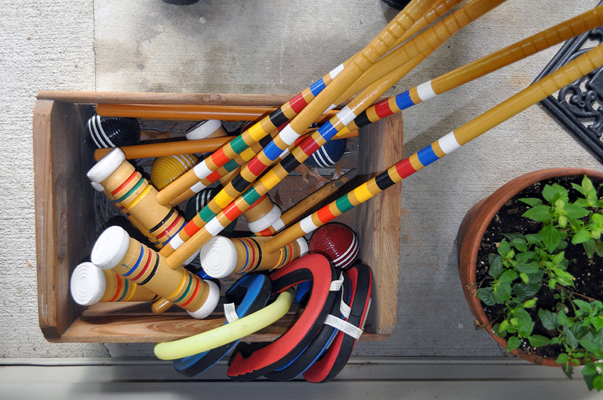

Frequently Asked Questions
Q: When is check-in and check-out?
A: Check-in is 10 a.m. and Check-out is 3:00 p.m. on Thursday's through Monday's. Checking in earlier or staying later can be extended with Owner approval (I am flexible, in regards to this topic).
Q: What is in the area?
A: Hidden Oaks Cottage is a few miles from various Bakeries, Dining and Grocery Stores. Links provided under the Dinning Tab for your convenience.
Q: Do you have wireless internet service for my laptop?
A: Yes, there is free Wifi for all guests.
Q: What if scrap-booking is not my hobby?
A: Hidden Oaks Cottage has been designed and furnished with Crafting in mind. We welcome all Crafter's as well as groups who are just looking for a relaxing get-away. How you spend your Retreat time is up to you.
Q: What do I need to bring?
A: All you need to bring is your craft gear, beverages and snacks! We provide bed linens and bath towels. If you love your pillow and cannot do without it bring that too. If selected, meals can be delivered from local eateries such as (Applebee's car side to go, Green Mill, Pizza Hut,).
Q: Will I have enough space to craft?
A: Each Crafter will have their own 6 foot table space to craft on as well as a crafting light and ample outlets with phone / I-pad chargers.
Q: What is the configuration of the bedroom?
A: The bedroom has three (3) twin beds and (1) fold up cot.
Q: Will I have my own bed?
A: Yes! There are three (3) individual twin sized beds and there are no bunks. I picked out the comfiest mattresses I could find and paired them with luxurious sheets, a cozy comforter and fluffy pillows. Check out the photos on the main page or in the online Albums. If you have a fourth and fifth friend who really wants to craft with your group there is a few comfortable fold up cots with the same cozy comforters and sheets available as well as a twin size air mattress. See pricing for additional guests or let me know and we can discuss and set correct expectations.
Q: Do you provide cleaning services?
A: We will provide fresh bed linens and bath towels and will ensure the house is clean when you arrive. We do ask that you place the dishes in the dishwasher as you leave and place all towels in the provided laundry hamper. The cottage is yours for the weekend treat it as your own.
Q: Are smoking or pets permitted at Hidden Oaks Cottage?
A: Hidden Oaks Cottage is a non-smoking facility. Pets are not permitted on the premises at any time.
Q: Can I bring my own food?
A: Yes. There is a fully equipped kitchen and refrigerator for your use.
Your group can choose to make their own meals, have them all delivered, or have a little bit of both! Our kitchen is fully stocked and ready for any meals that your group might want to cook up yourselves. If you decide you do not want to worry about meals information will be available in the cottage on nearby take out and shopping locations.
Q: Are non-scrap-bookers/quilters welcome at Hidden Oaks Cottage Retreat?
A: Everyone is welcome at Hidden Oaks Cottage Retreat! You do not even have to be a crafter. Come and enjoy a quiet place to stay with the family, get together with friends. It is a quiet area to enjoy and get away from the hectic pace of the cities.
Q: Do you have plenty of parking space?
A: Yes we do. There is no need to carpool. Four (4) cars can park by the front entrance and any additional cars can park in the parking lot a few hundred feet away.
Q: Do you keep a waiting list?
A: Yes we do! If you notice that the weekend you would like is reserved, let us know and we will put your name on a waiting list. We will then contact you if we get a cancellation.
Q: Are the owners nearby should we have a request or need concerning the Cottage?
A: The owners live on the property in a separate home. Your questions or concerns can be "texted" or a voice-mail can be left and we will do our best to accommodate your request with-in a reasonable amount of time. The cottage is separate from the main home and provides a separate entrance, patio and view of pond and access to back yard if desired. Guests have ease of parking. Guest will be able to park right up by the cottage entrance door there is ample space and it is designed for the ease of access.
Q: What if a Emergency comes up and our Group needs to reschedule. Or a person with-in our Group has an emergency and can not attend the weekend we have reserved?
A: Emergency are to be expected. A gift certificate will be offered and e-mailed to the person or group. The gift certificate can be used at a later date based on availability and will not expire for as long as Hidden Oaks Cottage is in business.
*But the weekend in full will need to be paid for as planned since that time slot was reserved and blocked for your group well in advance. Unless you can find a replacement group for your weekend. I want your group to enjoy their stay and to make this an annual event. Some type of arrangement that will benefit your group and the business will be done."
Q: What if I provide a group referral or business service idea to Hidden Oaks Cottage Retreat ?
A: Love referral's, new customers and business enhancement idea's. Let's talk I am sure we can arrange something.
Q: My question was not on this list, now what?
A: Send us an e-mail! We would be glad to hear from you and answer any questions that you might have. Our e-mail address is hiddenoakscottageretreat@gmail.com


 
